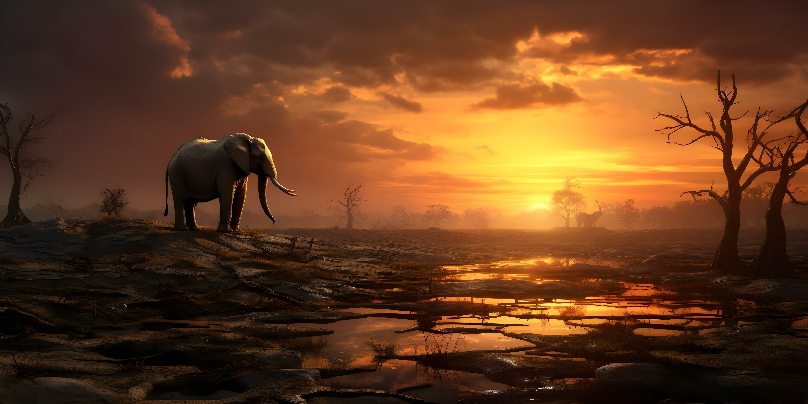

Challenges and Threats
In this aims to protect, restore, and promote the sustainable use of terrestrial ecosystems, manage forests sustainably, combat desertification, and halt and reverse land degradation and halt biodiversity loss. However, several challenges and threats hinder progress towards achieving this goal:
Climate Change Impacts on Terrestrial Ecosystems
Ecosystems on earth are changing significantly as a result of climate change. Changes in temperature, changed rainfall systems, and severe weather events are impacting biodiversity, ecosystem health, and the distribution of species. The long-term viability and resilience of land ecosystems are under risk due to these changes.

Pollution and Its Effects on Land and Biodiversity
Pollution, including chemical runoff, plastic waste, and air pollution, significantly impacts land and biodiversity. Contaminants can degrade soil quality, harm plant and animal life, and disrupt ecosystem functions. Addressing pollution is crucial for protecting terrestrial habitats and maintaining biodiversity.

Human Activities Leading to Habitat Destruction and Degradation
Agricultural practices, mining, development, and forestry are a few examples of human activities that cause habitat loss and ruin. Natural habitats are lost, ecosystems become split, and species populations drop as a result of these activities. It takes environmentally friendly land use techniques to reduce these effects.
